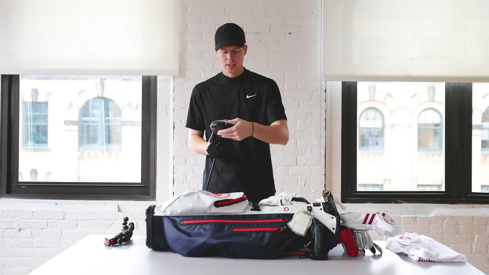
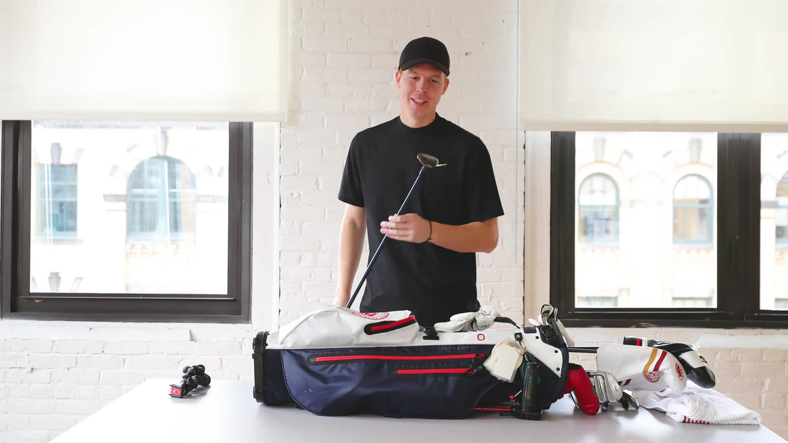
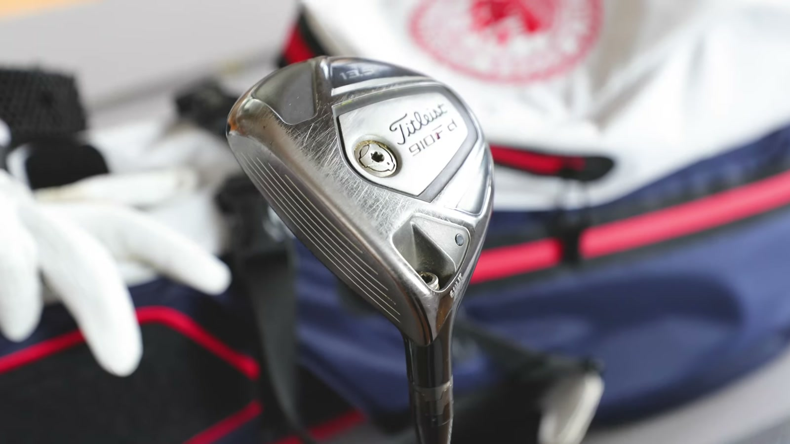
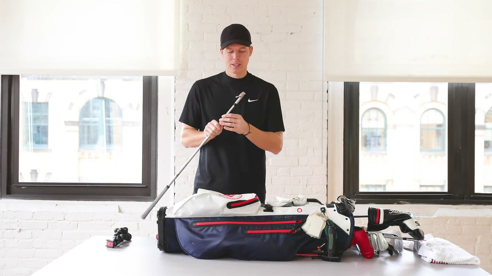
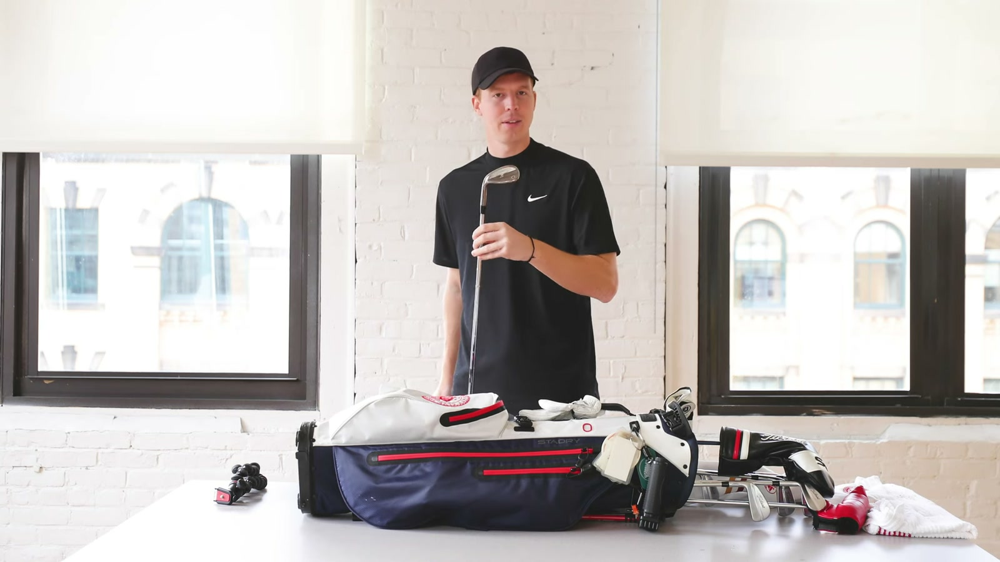
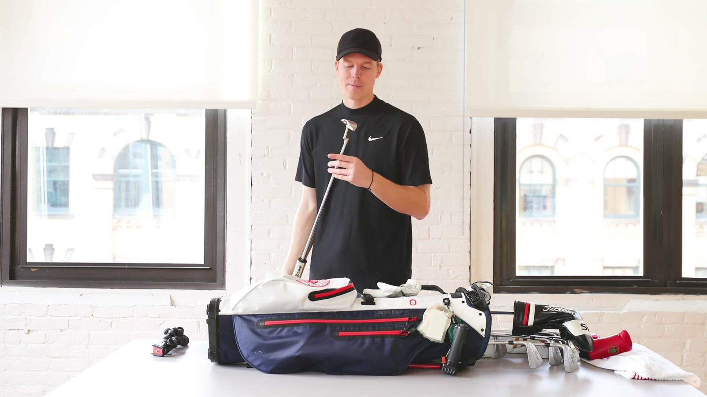

Executive summary
The most useful part of this bag is what had not been decided yet
GolfandGrass's 2020 setup is built around familiar Titleist equipment, but several slots are still being tested. The TS3 driver uses a Diamana shaft carried over from college. The 910 Fd 3-wood acts almost entirely as a mini driver from the tee. A 19-degree 910 hybrid has been a long-time favorite, yet a new 3-iron may replace it. The newly ordered 620 MB blade set is still missing its 7-iron, and the pitching-wedge slot is split between a 46-degree Vokey and the 48-degree blade pitching wedge.
The bag therefore cannot be reduced to a clean legal 14 from the video alone. He explicitly says he currently has four wedges and is deciding between overlapping options. The honest summary is a working inventory: trusted gamers, incoming replacements, and candidates under offseason testing.
Bag-count boundary. The speaker shows more candidates than a settled 14-club competition bag and says the 7-iron has not arrived. This article maps every club discussed but does not pretend the video establishes one final legal configuration.
Complete equipment map
Every club shown, including the unresolved choices
| Slot | Model | Configuration | Role and status | Time |
|---|---|---|---|---|
| Driver | Titleist TS3 | 9.5° head set near 9° · Diamana 65 Mid X · midsize grip | Primary tee club. The shaft has survived roughly three different heads and matters more to him than the head. | 3:36 |
| 3-wood | Titleist 910 Fd | 13.5° · RIP X shaft · midsize grip | Used like a mini driver from the tee when the driver is unreliable. He says the low loft prevents him from launching it comfortably from the fairway. | 5:03 |
| Hybrid candidate | Titleist 910 hybrid | 19° · Project X HD2 stiff · midsize grip | A trusted high-school club, but used less often in 2020 and under review against the new 3-iron. | 4:25 |
| Iron set | Titleist 620 MB | 3-iron through PW · Dynamic Gold X100 · Tour Velvet standard grips | Full blade set chosen after three fittings. At filming, every club except the 7-iron has arrived. | 5:45 |
| Pitching-wedge candidate | Titleist Vokey SM4 | 46° | Competes with the 48° 620 MB pitching wedge. He believes the Vokey moves through rough better. | 7:58 |
| Set pitching wedge | Titleist 620 MB PW | 48° | Part of the blade set, but not yet guaranteed to keep the scoring-club slot. | 8:05 |
| Gap wedge | Titleist Vokey SM7 | 52° | Frequently practiced and replaced roughly yearly as the grooves wear. | 7:44 |
| Highest-loft wedge | Titleist Vokey SM7 | 58° | Primary greenside wedge; replaced every year to year and a half. | 7:32 |
| Putter | Scotty Cameron Newport Select 2 | SuperStroke Slim 3.0 grip | Purchased new around 2011 and treated as a lifetime club despite a toe that has become slightly bent open. | 8:25 |
| Ball | Titleist Pro V1 | Changed from Pro V1x after an iron fitting | Only four or five balls are carried; scarcity is used as a concentration device. | 1:34 |
Driver and shaft
The shaft is the stable identity; the head is replaceable
The TS3 head was new to the bag in 2020, but the Diamana 65 Mid X shaft dates back to the speaker's freshman year of college. He says he has used the same shaft through three different heads and notices less difference between heads than between shafts.
That is a player preference, not a universal fitting law. Head loft, center of gravity, face behavior, shaft profile, length, and total build all interact. What the video does establish is a trust hierarchy: the shaft and midsize grip define the familiar delivery, while the head can change around them.

The top-end problem
The hybrid and 3-iron are competing for the same confidence slot
The 19-degree 910 hybrid was a bread-and-butter club through high school. By 2020, however, it is appearing less often on course. A new 3-iron suits his preference for irons, so the offseason plan is to test which club deserves the role.
The 910 Fd does not solve that question. At 13.5 degrees with a deeper face, it operates as a secondary tee club. He openly says he cannot launch it from the fairway. The top of the bag therefore contains three distinct use cases: driver for maximum distance, 3-wood for controlled tee distance, and hybrid or 3-iron for the long approach slot.


The blade experiment
He chooses a harder iron because difficulty changes his practice behavior
After three fittings produced different recommendations, Titleist fit him into a CB/MB combo set. He overrode that recommendation and ordered the full 620 MB blade set. His reasoning is behavioral: when an iron is harder to hit, he practices more and believes the demand improves his ball striking.
This is not evidence that blades make golfers improve faster. It is a statement about his motivation. The tradeoff is real: his handicap can range from roughly 4 to 12, the full set is demanding, and the order itself remains incomplete months later. The decision optimizes engagement and feel, not forgiveness.

Wedge geometry
The unresolved 46° versus 48° choice affects the whole scoring ladder
The fixed wedges are a 52-degree SM7 and a 58-degree SM7. The uncertain slot is the pitching wedge: a 46-degree SM4 Vokey that moves through rough well versus the 48-degree 620 MB pitching wedge that belongs to the new set.
The choice changes the gaps. A 46°–52°–58° system creates two six-degree steps. A 48°–52°–58° system creates a tighter four-degree gap followed by six. Loft alone cannot settle it; carry, launch, spin, sole interaction, and partial-shot comfort must be measured.

The lifetime club
The oldest emotional commitment in the bag is the putter
The Newport Select 2 was the first club he bought brand new, around 2011. The SuperStroke Slim 3.0 grip has remained since the original purchase. Even a slightly open, bent toe does not weaken the attachment; he describes the putter as something he may never change.
This is the opposite of the unsettled iron and wedge choices. The putter's value is accumulated familiarity. Because it is used more than any other club, he views the high purchase price as defensible over a long service life.

The carry system
The 2020 bag is built for wet Northeast rounds and content creation
- Bag: Titleist Players 4 StaDry. He accepts the extra weight because he normally uses a pushcart and values rain protection.
- Towel: a long GolfandGrass tour towel, with one end kept wet for clubheads and the other dry for grips.
- Cleaning: a Grooveit brush with an internal water reservoir, useful when course ball washers were unavailable during the COVID period.
- Rangefinder: Bushnell, probably Tour V5 according to the spoken description, without slope.
- Content tools: a small tripod and GoPro for filming alone.
- Slow-play tool: a tennis ball for keeping the arms moving during four-and-a-half to five-hour Boston-area rounds.
- Gloves: separate range and playing gloves; no preferred long-term brand had been found.
2020 → 2025
Five years later, the experiments become a clearer role-based bag
Driver: TS3 → TSi3
The head changes and loft increases, while the Diamana family and preference for an X-flex profile remain. By 2025 the driver is again under evaluation, showing that this slot never becomes emotionally permanent.
3-wood: 910 Fd survives
The oldest wood remains because its tee role is trusted. The 2025 account gives it broader fairway usefulness, suggesting either technique or role confidence expanded.
Hybrid → utility iron
The 19-degree hybrid disappears. A T200 2-iron becomes the volatile long-club slot, confirming the 2020 preference for iron-shaped options while preserving the same confidence problem.
Full blades → combo set
The fitter's original logic eventually wins. By 2025, T100 heads cover 4–8 and 620 MB blades remain only in 9-iron and pitching wedge.
46/48/52/58 → 52/56/60
The uncertain pitching-wedge overlap disappears. The later bag uses a simpler three-wedge ladder above the set pitching wedge.
Blade putter → conditional system
The beloved Newport does not vanish completely, but a mallet becomes the slow-green option while a blade returns on fast greens.
StaDry → Mackenzie canvas
The practical weatherproof pushcart system gives way to a smaller handmade canvas carry bag, reflecting a move toward minimalism.
Pro V1 remains
The fitting-driven move from Pro V1x to Pro V1 survives across both snapshots, making the ball one of the most stable choices.
Read the later configuration in The Right 14 Clubs: A Practical WITB Built Around Roles.
Equipment playbook
What to borrow from a bag that is still changing
- Separate inventory from final configuration. Testing clubs can coexist at home without all entering the competition bag.
- Define the lie and job for every long club. A tee-only 3-wood does not automatically replace a fairway wood or hybrid.
- Respect the shaft-head system. A trusted shaft may stabilize delivery, but new heads still require complete-build testing.
- Test overlapping clubs by carry and dispersion. Hybrid versus 3-iron and 46° versus 48° are performance questions, not identity questions.
- Do not confuse motivation with forgiveness. A demanding club can inspire practice while still producing worse scoring outcomes.
- Track what persists across years. The 910 Fd, Pro V1, and blade-putter familiarity reveal more about real trust than launch-year marketing.
My take
The 2025 bag validates the fitting advice he initially ignored
The sharpest five-year lesson is the iron set. In 2020, Titleist fit him into a CB/MB combo, but he ordered full blades because he wanted the challenge. By 2025, his actual bag uses the same underlying architecture the fitter proposed: forgiveness in the longer irons and blades only in the scoring end.
That does not make the 2020 decision foolish. The full blades may have supported practice and clarified preference. But the later configuration suggests that equipment evolves from aspiration toward role clarity. The best bag is not the one that expresses the purest identity; it is the one whose misses and jobs are easiest to predict.
Sources and method
What this article is based on
- GolfandGrass · What's in the Bag 2020. Primary source for every 2020 club, specification, preference, and accessory.
- The Right 14 Clubs, based on GolfandGrass's 2025 WITB. Used only for the labeled five-year comparison.
Method: 321 public English-caption rows were reviewed against the 1080p source video, official description, and chapter labels. Seven direct frames were exported at 1600x900. Where the speaker is unsure of a model or the bag is still under testing, the uncertainty is preserved rather than silently resolved.